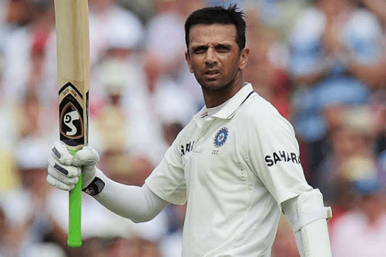

Rahul 'The Wall' Dravid
When the doors of the temple are closed even the god is behind 'The Wall'

Awards:
- 1998: Arjuna award
- 1999: CEAT International Cricketer of the World Cup
- 1999: Wisden Cricketer of the Year 2000
- 2004: Sir Garfield Sobers Trophy Winner (Awarded for ICC Player of the Year)
- 2004: Padma Shri
- 2004: ICC Test Player of The Year, ICC Cricketer of The Year MTV Youth Icon of the Year for 2004
- 2006: Captain of the ICC's Test Team
- 2011: NDTV Indian of the Year's Lifetime Achievement Award with Dev Anand
- 2012: Don Bradman Award with Glen McGrath
- 2013: Padma Bhushan
Some Acheivements:
- Holds the world record for being the first non-wicketkeeper to take 200 catches in Test cricket.
- Scored nearly 23% of the total runs put up by India (with a batting average of 102.84) in the 21 Test matches won under Ganguly's captaincy. This is the highest percentage contribution by any batsman in Test cricket history in matches
won under a single captain where the captain has won more than 20 Tests.
- 2nd longest streak of consecutive Tests since debut (93 + 1 in ICC XI) missed 95th test at Ahmedabad due to fever, behind Adam Gilchrist (96).
- Only player to score a century against every Test playing nation away from home.
- He has played 150 innings of 94 tests at number 3. He has scored more than 8000 runs at this position. Both feats are world records.
- 2nd Indian batsman to score twin hundreds in a Test twice, after Sunil Gavaskar. Gavaskar and Ponting are the only batsmen to score twin hundreds in a Test thrice.
- Dravid has faced highest number of deliveries in test cricket, 31258 to be precise.
- Rahul Dravid is the third batsman in the world after compatriot Sachin Tendulkar and Australia's Ricky Ponting to reach the 12000-run milestone in test cricket.
- Has the record of not being dismissed on duck for the most number of consecutive ODI matches (120).
Personal life
Family
Family On 4 May 2003, Dravid he married Vijeta Pendharkar, a surgeon from Nagpur.[248] Vijeta Pendharkar is from the Deshastha Brahmin community, of which Dravid is also a part of.[21] They have two children: Samit, born in 2005,[249] and Anvay, born
in 2009.[250] Dravid is fluent in Marathi, Hindi, Kannada and English. Commercial endorsements Rahul Dravid has been sponsored by several brands throughout his career, including Reebok (1996 – present),[251] Pepsi (1997 – present),[252]
Kissan (Unknown),[253] Castrol (2001 – present),[254] Hutch (2003),[255][256] Karnataka Tourism (2004),[257] Max Life (2005 – present),[258] Bank of Baroda (2005 – present),[259] Citizen (2006 – present),[260] Skyline Construction
(2006 – present),[261] Sansui (2007),[262] Gillette (2007 – present),[263] Samsung (2002[264] – 2004[265]), World Trade Center Noida (2013– present),[266] CRED (2021-present). Social commitments Children's Movement for Civic Awareness
(CMCA)[267][268] UNICEF Supporter and AIDS Awareness Campaign[269]
-Brett Lee
Commercial endorsements
Rahul Dravid has been sponsored by several brands throughout his career, including Reebok (1996 – present),[251] Pepsi (1997 – present),[252] Kissan (Unknown),[253] Castrol (2001 – present),[254] Hutch (2003),[255][256] Karnataka Tourism (2004),[257]
Max Life (2005 – present),[258] Bank of Baroda (2005 – present),[259] Citizen (2006 – present),[260] Skyline Construction (2006 – present),[261] Sansui (2007),[262] Gillette (2007 – present),[263] Samsung (2002[264] – 2004[265]),
World Trade Center Noida (2013– present),[266] CRED (2021-present).
Playing style
Dravid is known for his technique, and has been one of the most successful batsmen of the Indian cricket team.[209] Early in his career, he was known as a defensive batsman who was best at playing Test cricket, and was dropped from the ODI squad due to
a low strike rate. However, he later scored improved his ability to score well in ODIs, earning him the ICC Player of the Year award.[210] His nickname of 'The Wall' in Reebok advertisements is now used as his nickname.[citation
needed] Dravid has scored 36 centuries in Test cricket, with an average of 52.31; this includes five double centuries. In one-dayers, he averaged 39.16, with a strike rate of 71.23.[211] He is one of the few Indians whose Test
average is better while playing away than at home, averaging almost five runs more on foreign pitches.[212] As of 23 September 2010, Dravid's Test average abroad is 55.53, while his Test average at home is 50.76;[212] his ODI
average abroad is 37.93[213] and his ODI average at home is 43.11. [214] Dravid averages 66.34 runs in Indian Test victories.[215] and 50.69 runs in ODIs.[216]Dravid's sole Test wicket was of Ridley Jacobs in the fourth Test
match against the West Indies during the 2001–2002 series.[218] Dravid often kept wickets for India in ODIs.[219] Dravid was involved in two of the largest partnerships in ODIs: a 318-run partnership with Sourav Ganguly, the
first pair to combine for a 300-run partnership,[220] and a 331-run partnership with Sachin Tendulkar, which is a world record.[221] He also holds the record for the greatest number of innings played since debut before being
dismissed for a duck. His highest scores in ODIs and Tests are 153 and 270, respectively.[222]He was named one of the Wisden Cricketers of the Year in 2000.[223] Though primarily a defensive batsman, Dravid scored 50 runs not
out in 22 balls (a strike rate of 227.27) against New Zealand in Hyderabad on 15 November 2003, the second fastest 50 among Indian batsmen.[224] In 2004, Dravid was awarded the Padma Shri by the Government of India.[225] On
7 September 2004, he was awarded the inaugural Player of the year award and the Test player of the year award by the International Cricket Council (ICC).[226]After reaching the 10,000 Test runs milestone, he said, "It's a proud
moment for sure. For me, growing up, I dreamt of playing for India. When I look back, I probably exceeded my expectations with what I have done over the last 10 to 12 years. I never had an ambition to do it because I never
believed – it is just a reflection of my longevity in the game."[228] Dravid is also one of only two batsmen to score 10,000 runs at a single batting position and is the fourth highest run scorer in Test cricket, behind Tendulkar,
Ponting and Kallis.[229]